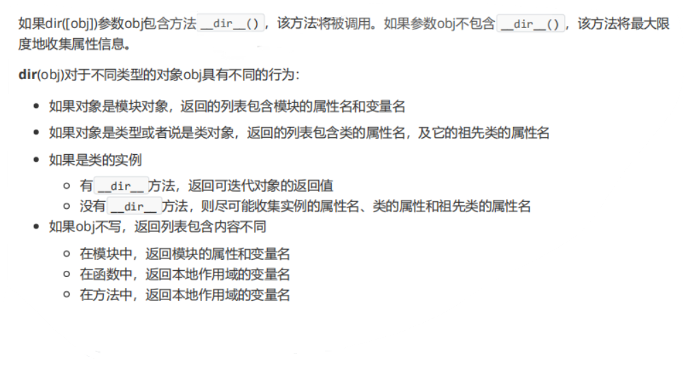

# 模块的内置属性
对于任何一个 python 文件来说，当 python 解释器运行一个 py 文件，会自动将一些内容加载到内置的属性中；一个模块我们可以看做是一个比类更大的对象。
# 查看内置属性
我们可以通过 dir () 方法获取该模块所有的显式或隐式属性。
附上 dir () 的介绍：

# -*- coding:utf-8 -*- | |
''' | |
doc...... | |
''' | |
import os | |
var = None | |
class Test(object): | |
pass | |
if __name__ == "__main__": | |
print(dir()) | |
####### 输出结果 ####### | |
['Test', '__annotations__', '__builtins__', '__cached__', '__doc__', '__file__', '__loader__', '__name__', '__package__', '__spec__', 'os', 'var'] |
这里有些内容不确定：
《python 网络编程从入门到精通》这本书上写原话是可以看到隐式属性有['Test', '__annotations__', '__builtins__', '__cached__', '__doc__', '__file__', '__loader__', '__name__', '__package__', '__spec__', 'os', 'var']
而在网上的 https://www.cnblogs.com/cwp-bg/p/9856339.html 博客中这样写的可看到隐式的属性有__annotations__,__builtins__,__cached__,__annotations__,__doc__,__file__,__loader__,__name__;
我们打印一下每个魔法属性：
''' | |
doc...... | |
''' | |
import os | |
var = None | |
class Test(object): | |
pass | |
if __name__ == "__main__": | |
# print(dir()) | |
print(__name__) | |
print(__annotations__) | |
print(__builtins__) | |
print(__cached__) | |
print(__doc__) | |
print(__file__) | |
print(__loader__) | |
print(__package__) | |
print(__spec__) | |
######### 输出结果 ############### | |
__main__ | |
{} | |
<module 'builtins' (built-in)> | |
None | |
doc...... | |
G:/Text_Files/py/1.py | |
<_frozen_importlib_external.SourceFileLoader object at 0x0000018C7E37F8B0> | |
None | |
None | |
## 空行是打印时就有的 | |
# 其中__name__、__doc__、__file__、__package__是可以直接使用的，其它的内置属性一般不允许直接使用。 |
# 内置魔法属性
_name_
该属性代表当前模块的名字，每个 py 文件默认的属性，如果当前模块是主程序，值为 “main”，如果不是主程序，值为模块名。这个属性经常用来区分主程序和作为被导入模块的程序。_builtins_
该属性代表内置模块 builtins，即所有的内建函数、内置类型、内置异常等；在 python 执行一个 py 文件时，会将内置模块赋值给这个属性；如果不是主程序，那么这个属性是一个 builtins 模块所有方法的字典。_doc_
模块的说明文档，py 文件初始化时，将文件开始的说明字符串赋值给这个属性。_file_
该属性代表文件的绝对路径，任何一个模块使用这个属性就可获得本模块的绝对路径；但是该属性只在 windows 环境下可用，在 linux 环境下不可用。_cached_
缓存文件，如果是主程序，那么该属性为 None，其他模块的该属性指向该模块的 pyc 字节文件，这样在 py 文件不发生修改的情况下可以减少编译的时间，更快地加载上下文环境。_annotations_
该属性对于模块文件来说，没有开放给用户使用；但对于函数来说，这个方法用来记录参数的类型和返回值。
def get_sum(x,y): | |
return x + y | |
print(get_sum.__annotations__) #输出结果 {} | |
def get_sum(x, y: int) -> int: | |
return x + y | |
print(get_sum.__annotations__) # {'y': <class 'int'>, 'return': <class 'int'>} |
函数的参数和返回值如果在定义的时候指定了类型，那么它们就会以键值对的形式记录到函数的__annotations__属性中，但对于匿名函数来说，这个属性是不存在的。
_loader_
该属性 py3.3 之前没有，引用了本模块的加载器对象，即该模块的上下文是由这个加载器加载到内存中的。_package_
该属性是一个文件是否是包的标志，在主程序中该属性的值永远是 None，不要使用它；当一个包被导入到主程序中，该包的__package__属性为包的名字。
# test | |
--__init__.py | |
# main.py | |
import test | |
print(test.__package__) # test |
- spec
该属性记录一个模块的详细信息，是一个 ModuleSpec 对象，
# 其他魔法属性
- author
该属性用来定义模块的作者信息，可以是字符串，也可以是列表、字典等数据结构。
# 可以在 python 文件中加入 | |
__author__ = {'auth':'1asy';'bg':'https://self-ferry.github.io/'} | |
# 或 | |
__author__ = '1asy' |
- all
该属性不是模块默认的，需要手动定义，它的功能有二：
记录一个模块有哪些重要的、对外开发的类、方法或变量等，或记录一个包哪些对外开放的模块；
限制导入，当使用 “from xxx import *” 形式导入时，实际导入的只有__all__属性中的同名的对象而不是所有，但对于 “from xxx import xxx” 指定了具体的名字则 all 属性被忽略。
# 魔法方法
# _import_
该魔法方法是 import 触发，即 import os 相当于 os = __import__('os') ，也可以直接使用，主要用于模块延迟加载，或重载模块。
参数：
name: 模块的名字；
global: 包含全局变量的字典，采用默认值 global ()
local: 包含局部变量的字典，采用默认值 local ()
fromlist: 被导入的子模块的名称
level: 指定使用绝对导入还是相对导入，0 表示只执行绝对导入。
实例
这段代码能在 Linux 下调用 shell
def loader(a, b, c): | |
a = __import__(a) | |
getattr(a, b)(c) | |
if __name__ == "__main__": | |
loader("os", "system", "/bin/sh") |
__import__函数返回的是一个变量，代表一个模块，所有后续方法的调用都要在这个变量的基础上。
# Reference
https://www.cnblogs.com/cwp-bg/p/9856339.html